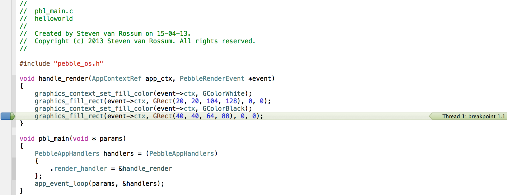
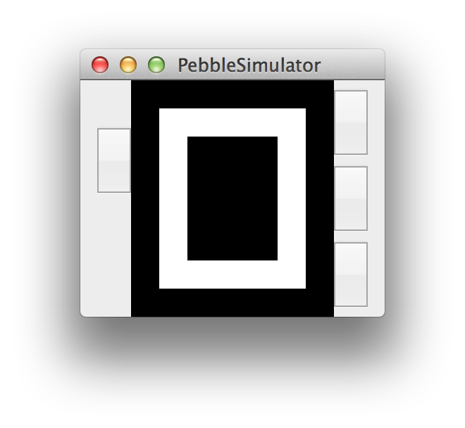

Designing Pebble apps has never been this easy.
Pebble Simulator was built to deliver you a familiar interface for designing Pebble Apps.
This goal is achieved by letting you compile, run and debug from Xcode on your Mac, without ever touching your Pebble.
Your code will run inside the Pebble Simulator thanks to libpebblesim, a library that's binary compatible with the current Pebble Watchface SDK (PR001).
This design allows you to debug your Pebble application, just like you would debug an iPhone application.
